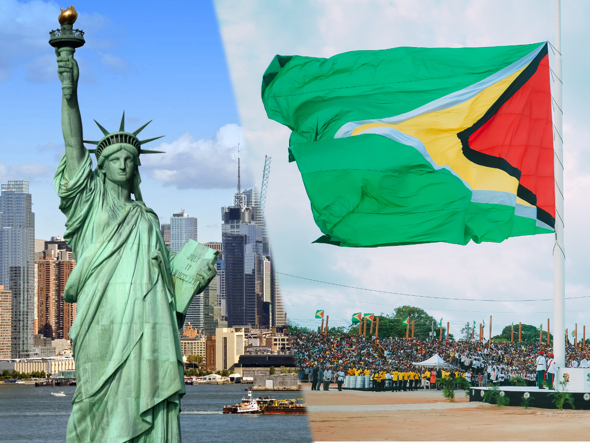
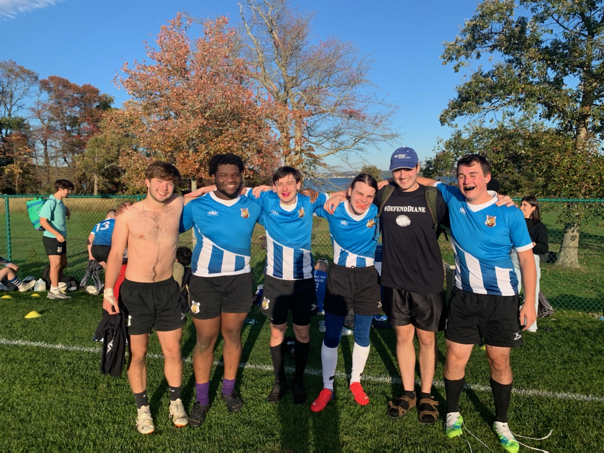

About Me
ME ME ME
My Family / Where I am from
I was born and raised in Queens, New York. Although I had visited other places travelling. I had lived in the city my entire life and living at Wheaton in Norton was the first experience I had living in a setting like this. My family is from Guyana. My parents moved to the U.S. right before I was born with many other family members. Since I spent my whole life here, at family meetings, I am always the one my aunts and uncles jokingly call "the American" as if they weren't since they lived a lot of their lives in Guyana.
Academics

Being in class of 2023, I am a currently a junior as of taking intro to digifab. I am a computer science major and a math minor. I am planning to go for a masters right after graduating. My current hope for a career is something in software development. Even though I play a lot of video games, I do not want to be a game designer, I would rather work on apps that people use as tools in their lives for certain tasks.
Video Games
I like video games a lot and I play them a lot. I grew up playing games on my gamecube and wii. eventually, when I started shifitng toward pc games, I played a lot of sandbox games liked Garry's mod and minecraft. sometimes I play strategy games or fps games, but most of my time has definetly been in sandox games where there is no goal and it is up to you to create things. There are actually a lot of experiences I had in the games I played that would teach me about coding and gave me a head start in some of my CS classes. I'm glad that when college came, I was able to tone back the gaming for things like friends and academics, but I still very much love video games.
Rugby
I am part of the school's men's rugby team. I had never played a sport seriously until college. I was convinced by people on the team to try out practicing with the rugby team and I really liked it. My position is Prop, and even though I have been on the team for a while, because covid got in the way of a lot of things, it is only now that I have been able to play in games with the team.